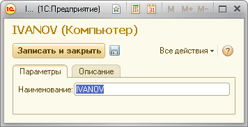

Для запуска виртуальных пользователей, выполняющих тест, необходимо определить на каких компьютерах и в каких клиентских подключениях они будут запускаться.
Для описания компьютеров предназначен справочник «Компьютеры». Необходимо описать в нем все компьютеры, которые предполагается использовать для запуска виртуальных пользователей. Для описания компьютера нужно указать его сетевое имя (без имени домена).
